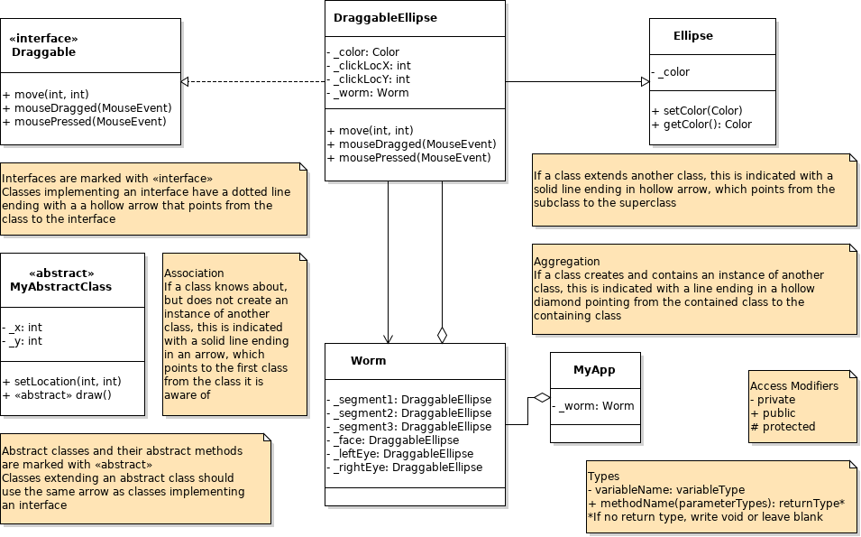
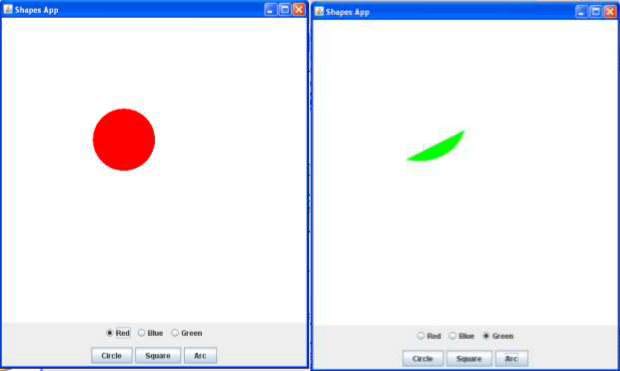
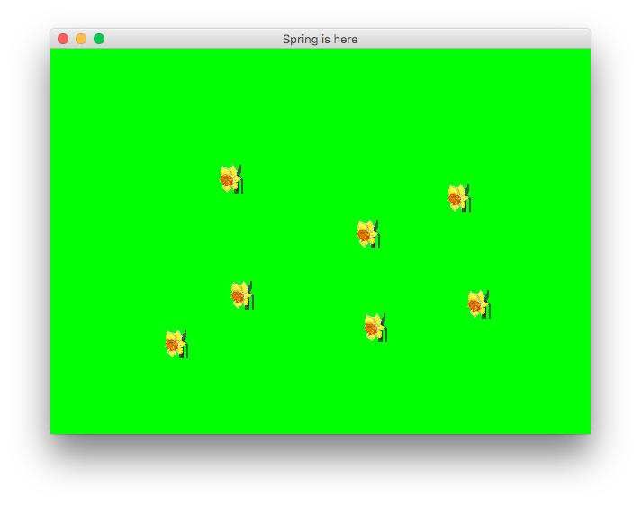

Overview
This site contains all assignments for SER120L. Starter code will be posted separately on Blackboard.
These lab assignments are meant to help you practice what you learn in SER120. It's important to keep up with the lab practice so that you're prepared for activities in the SER120 lecture, so make sure you complete and submit each lab before the deadline listed on Blackboard.
Lab 1: Introduction to Java & Eclipse
Objectives
- Use the Eclipse IDE to write, compile, and run Java programs
- Write a basic "Hello World" program
- Write Java code to perform a simple dialog-based interaction
Task 0: Start Eclipse
The Eclipse Integrated Development Environment (IDE) is a powerful tool for editing, compiling, and running programs. It has many other functionalities, but we will focus on the basics today. Let’s get started.
-
Find the Eclipse application on your computer and open it. If this is your first time starting Eclipse, you might see a window similar to the one shown below. Eclipse asks you to specify your workspace. This is the folder where you will be saving all your Java programs. Think about a good place (e.g. MyCourses/SER120/Programs).

-
Browse to your folder for SER 120 programs (create one if you do not have one yet), and then click the OK button. You will see the screen shown below:

-
The welcome screen will appear for first-time users. If you mouse over the bubbles, they will reveal various places you could go to get more information. For now, just close the folder by clicking on the X in the Welcome tab in the top-left part of the screen (just above the Welcome to the Eclipse IDE for Java Developers message).
The Java Perspective
Once you close the Welcome screen you will get to the Java Perspective view. Maximize the application window. This is essentially your home base for doing all your Java work. Think of Eclipse as a carpenter’s workbench with all sorts of tools to support the carpenter’s work. Except, that the carpenter is now a programmer and the tools are software-based. Let’s spend some time getting familiar with the Java Perspective/the workbench. Then we can write and run some programs.

Apart from the Menu options/icons, the default workbench area is divided into 5 major views/sections (see above):
- Package Explorer: This will show your project files (each folder at the top level typically represents a separate project)
- Editor: This is where you edit/write code
- Problems: This is where problems are reported. Also notice tabs for Javadoc, Declaration, Diagrams, etc. We will visit these later.
- Task List: TODO tasks listed here. You can close this. We will not need this for some time.
- Outline: This will show an outline of your code (to be used later).
For now, just focus on the Menu options, the Package Explorer, and the Editor panes. Note: If you accidentally close any of the windows and you like to restore the java perspective, go to Window, then choose Reset Perspective.
Task 1: New Java Project and Hello World
To create a new project in Eclipse, from the File menu, select New and then select Java Project (see below):


Every Java program you write in Eclipse will be part of a Project. After you select the New Project option, you will get a pop up window (see above). This is a form to fill out some details about the kind of project you are creating.
Enter the name for your project in the "Project name" field. We have chosen HelloWorld as you can see. Click Finish to accept the default settings and create the project, now named HelloWorld.
You will notice that the HelloWorld project is now listed in the Project Explorer view. Click on the little triangle to expose the contents of the project as shown in the figure below. Eclipse created a folder called HelloWorld in your specified workspace folder. In it, it has placed another folder called src which is currently empty. "src" is short for source code, and this is where the code for your program needs to go.


To write some Java code, we need to create a Java class (we will learn about classes later). Select the File Menu again, followed by New, and this time select "Class" (see above). Another form window will pop up as shown in Figure 7.
Enter the name of the class (HelloWorld) in the Name field of the form. The class name does not need to be the same as the project name; we just chose to name the class so, because it will contain a little Hello World program.
Also, make sure the little box against public static void main(String[] args) is checked. Your form should match the image below. Next, click Finish.

Eclipse has created, based on the information you provided in the previous form, a template Java program for you. Now, delete the TODO comment stub and add the System.out.println() command in the main() method:


Program Execution
Now you are ready to run the program. But first, be sure to Save the program (from the File Menu select the Save option). From the Run Menu, select the Run option (see the figure below).

Stuff happens. Very fast! If you focus on the Console view below the Editor view, you will see the output of your program:

Make some changes to the text that the program prints and run the program a few more times. Also, notice the icon bar below the Menu Bar. Many of the Menu items are available in that bar so you can just click and go.
Task 2: Dialog-Based Hello World
Create a new class called HelloWorldDialog and copy the
following code into the file:
/**
* Edit this header comment to include your name and a description of this
* class/program/assignment.
*/
import javax.swing.JOptionPane;
public class HelloWorldDialog {
public static void main(String[] args) {
JOptionPane.showMessageDialog(null, "Hello World!!!");
}
}
Run the program. This time the program should display a pop-up window instead of printing to the console.
Task 3: Dialog-Based Interaction
Create a new class called GreetingDialog and copy the
following code into the file:
/**
* Edit this header comment to include your name and a description of this
* class/program/assignment.
*/
import javax.swing.JOptionPane;
public class GreetingDialog {
public static void main(String[] args) {
String name = JOptionPane.showInputDialog("Enter your name:");
JOptionPane.showMessageDialog(null, "Hello " + name + "!!!");
}
}
Run the program and see what happens!
Locating Your Code
When you’ve finished with an assignment and want to submit your work, you’ll need to find the .java files you wrote in Eclipse. These are located in your workspace folder. You can check your workspace’s location by clicking "File", "Switch Workspace", "Other ...".
Each project has its own folder in your workspace, and you’ll find your source code in the "src" folder (as discussed earlier) within the project folder. Make sure you’re submitting the .java files, not the .class files. The folders in src should all be .java files, but if you accidentally look in the "bin" folder, you’ll see .class files with the same names as your classes. The .class files are compiled code, and for the most part they’re not human-readable. If you send me those instead of your .java files, I won’t be able to read or (in many cases) run your code.
Review & Submission
When you have completed the lab, please upload all Java source code and any other documents (such as diagrams or answers to questions) to Blackboard in a single submission. Make sure you have completed each task before submitting the assignment.
I will review all lab assignments after the deadline. You should usually receive feedback within a week of the deadline.
Lab 2: Introduction to the Wheels Package
Objectives
- Set up an Eclipse project that uses the Wheels Java graphical library
- Write programs using basic shapes defined in the Wheels library
Lab Setup
- Create a new Java project in Eclipse (consult the previous lab in case you have forgotten how). Call it "FirstWheelsApp".
- Download the wheels.zip file from Blackboard (under Course Materials) and save it in your course folder. This is a Java library of graphical shapes that will be used during the semester to build graphical applications.
Task 1: Create and run a Java graphical application using Wheels
-
Add the wheels library to the FirstWheelsApp project, so that Eclipse can use it when you write code in that project
- In the Package Explorer view in Eclipse, right click on the FirstWheelsApp project and select "Build Path" -> "Add External Archives".
- Then navigate to the wheels.zip file that you downloaded from Blackboard, select it, and click "Open". (Depending on your version of Eclipse, you may get slightly different views after you select "Build Path" -> "Add External Archives" in the previous step. If that is the case, select "Add External Jars" and then navigate to the wheels.zip file).
-
Create a new Java class in the FirstWheelsApp project.
- Right click on the FirstWheelsApp project in the Package Explorer view and select "New" -> "Class".
- Call this class FirstApp.
-
Edit the FirstApp class.
- Double-click on the FirstApp class in the PackageExplorer view to open the Java editor (it might already open by default as soon as you create the class).
- Replace the code in the FirstApp class with the following code.
public class FirstApp extends wheels.users.Frame { // instance variable declaration private wheels.users.Ellipse _ellipse; // constructor definition public FirstApp() { // create an instance of an Ellipse _ellipse = new wheels.users.Ellipse(); } // This is the main method, which specifies the code that // will be first executed when the FirstApp program is run. public static void main(String[] argv) { FirstApp myApp = new FirstApp(); } } -
Run the FirstApp
- Right click on the FirstApp class and select "Run As" -> "Java Application".
- A new window containing an ellipse (in this case a circle) should pop up.
- Congrats! You have successfully run your first Java graphics application using the wheels library.
Task 2: Add more code to the graphical app
-
Declare a variable that will refer to a bubble object right after the variable referring to an ellipse object is declared in the instance variables section of the FirstApp class:
private wheels.users.Ellipse _ellipse; private wheels.users.ConversationBubble _bubble; -
After the line that creates a new ellipse object
_ellipse = new wheels.users.Ellipse();add a new line to create a new conversation bubble object to make the application a bit more exciting
_bubble = new wheels.users.ConversationBubble("I am a red bubble"); -
Run the FirstApp application to see the result
Task 3: Exploring the Wheels library
- Write a version of FirstApp (inside the FirstWheelsApp project create new class, name it FirstAppWithRectangle) that displays a rectangle inside a Frame using the wheels’ Rectangle class.
- Write a version of FirstApp (inside the FirstWheelsApp project create new class, name it FirstAppWithRoundedRectangle) that displays a rectangle with rounded corners using the Wheels’ RoundedRectangle class.
- Write a version of FirstApp (inside the FirstWheelsApp project create new class, name it FirstAppWithLine) that displays a line using the Wheels Line class.
Review & Submission
When you have completed the lab, please upload all Java source code and any other documents (such as diagrams or answers to questions) to Blackboard in a single submission. Make sure you have completed each task before submitting the assignment.
I will review all lab assignments after the deadline. You should usually receive feedback within a week of the deadline.
Your submission must include:
FirstApp.javaFirstAppWithRectangle.javaFirstAppWithRoundedRectangle.javaFirstAppWithLine.java
Lab 3: Worm
Objectives
- Draw shapes using parameterized methods which position shapes and set their colors
- Determine the proper location of a shape based on the location of other shapes in the frame
- Learn how to use relative positioning
Lab Setup
- Download the .java files accompanying this lab.
- Create a new project in Eclipse and copy and paste the java files into that project.
- Add the Wheels package to the build path of the project (see previous lab for instructions).
- Compile and execute MyApp.
Task 1: Write a Parameterized Constructor
- Identify the existing default constructor of the Worm class.
- Add a second constructor to the Worm class. This should be a parameterized constructor that allows you to specify two color parameters for the worm when it is constructed, a main color and an alternate color.
- Call this new constructor from the MyApp class to make the worm red and yellow, instead of calling the default constructor.
- Compile and execute the program.
- Make the necessary changes in the Head class such that the head constructor takes two colors as parameters. Call this new constructor appropriately to change the head colors to red and yellow.
Task 2: Write a Body Class
- Create a new class called Body.
- Move the
_bodySeg1,_bodySeg2,_bodySeg3instance variables (currently defined in the Worm class) to the new Body class. - Write a parameterized constructor in the Body class that accepts as parameters the two colors to be used for setting the color of the body segments.
- Make the necessary additions to the Body class to set the location and sizes of the body segments (as they were originally set in the Worm class).
- Make necessary changes in the Worm class such that the Worm class would have an instance of Body with the body segments encapsulated inside the Body class.
- Compile and execute the modified program.
Task 3: Implement a setLocation Method in the Head Class
- Uncomment the code for the method
setLocation()inside the Head class. - In the constructors of the Worm class, call the
setLocation()method on the Head object with the appropriate values for the location coordinates. - In the constructors of the Head class, delete the individual calls to
the
setLocation()method that were previously included in these constructors (i.e.,_face.setLocation(...),_leye.setLocation(...), and_reye.setLocation(...)). - Make sure your program executes correctly.
Task 4: Implement a setLocation Method in the Body Class
- Implement a
setLocation()method in the Body class. ThesetLocation()method should take two int parameters, x and y, which specify the upper left corner of the bounding box for the Worm Body. The code of this method should use relative positioning - Remove all of the individual
setLocation()method invocations in your Body class constructor and call the body’ssetLocation()method in the Worm constructor.
Review & Submission
When you have completed the lab, please upload all Java source code and any other documents (such as diagrams or answers to questions) to Blackboard in a single submission. Make sure you have completed each task before submitting the assignment.
I will review all lab assignments after the deadline. You should usually receive feedback within a week of the deadline.
Your submission must include:
MyApp.javaWorm.javaBody.javaHead.java
Lab 4: Clickable Worm
Objectives
- Implement an event handler method
- Implement a subclass of the Ellipse class
- Replace instances of the Ellipse class with a subclass
Lab Setup
- Create a new project and add the wheels library to its build path.
- Now create a subclass of the Ellipse class named ClickableEllipse, which will implement the mouseClicked method.
- Create a parameterized constructor for ClickableEllipse that accepts two colors and saves them in two instance variables.
Task 1: Change Color of ClickableEllipse
- Implement the mouseClicked method such that the Ellipse alternates between the two colors, changing color with each mouse click.
- Create a ClickableEllipseApp class that displays an instance of ClickableEllipse and run the code to test it.
- Once you verify that the ClickableEllipse works, you can delete your ClickableEllipseApp class. It will stop working when you finish the other tasks, so you don’t need to submit it with the rest of the program.
Task 2: Add ClickableEllipse to the Worm
- Download the starter code from Blackboard and add it to your project, or copy over the code from your previous Worm project. If you are using your code from the previous lab, make sure you completed all of the required work from that lab. You should still download the starter code for this lab and look at the changes made to the Worm’s components.
- Replace all Ellipse instances in the Body class with your ClickableEllipse.
- Test your program.
Task 3: Click to Recolor the Entire Body
- In order to recolor the entire body when one segment is clicked, each
segment needs to be aware of the body. This will require you to add a Body
instance variable (named
_body) to the ClickbableEllipse class and a Body parameter (namedbody) to the ClickableEllipse's constructor. You will also have to modify the ClickbableEllipse and Body constructors. - Modify the code such that the
_body.setColor()is called in themouseClicked()method of the ClickableEllipse class to cause all body segments to change color when the mouse is clicked.
Task 4: Recolor the Entire Worm
- Further modify your code so that clicking the body or face causes whe entire Worm to change colors. The eyes should remain a different color from the face and don’t have to be clickable, but otherwise how the color change works is up to you (toggle between two or more colors, switch between different patterns, etc.). You should make the ClickableEllipse aware of the Worm instead of the Body, replace the ellipses in the head, and add a setColor method to both the Head and Worm in addition to the Body.
Review & Submission
When you have completed the lab, please upload all Java source code and any other documents (such as diagrams or answers to questions) to Blackboard in a single submission. Make sure you have completed each task before submitting the assignment.
I will review all lab assignments after the deadline. You should usually receive feedback within a week of the deadline.
Your submission must include:
MyApp.javaWorm.javaBody.javaHead.javaClickableEllipse.java
Lab 5: Draggable Worm
Objectives
- Implement an interface
- Create a draggable UI element
Lab Setup
- Download the starter code and run the MyEllipseApp program. Try to drag the ellipse displayed in the app.
- Change the implementation of the DraggableEllipse such that it drags smoothly (i.e. the ellipse doesn’t jump at the beginning of the dragging motion).
- Run the program again and test your changes.
Task 1: Make the Body Draggable
- Currently, you can drag any of the individual worm segments on their own. We want to be able to drag the entire Worm at once. You can try to make this change all at once, but it will help to start with just the body.
- Modify your DraggableEllipse class so that it knows about the body.
- Modify your DraggableEllipse’s mouseDragged method so that it calls the body’s move method rather than its own move method.
- Test your changes and make sure that the Worm’s entire body can be dragged at once.
Task 2: Make the Worm Draggable
- Change the DraggableEllipse again, so that it knows about the worm instead of the body. Don’t forget to remove any references to the body and replace them with references to the worm. Instead of calling the body’s move method, call the worm’s move method.
- Change your Worm and Body code to make sure that the Worm reference is passed through the Body constructor to the DraggableEllipses.
- Test your program: dragging any body segment should now drag the entire Worm!
- Now you just need to make similar changes to the Head class so that dragging the head also drags the entire worm.
Task 3: Use the Movable Interface
- If you haven’t already, make sure that the DraggableEllipse, Head, Body, and Worm classes each implement the Movable interface. This means they must also implement their own move method.
- Modify the DraggableEllipse class so that instead of a reference to the Body or Worm, it has a reference to a Movable. This Movable object could be anything that implements the Movable interface: the Head, Body, Worm, or even another DraggableEllipse.
- To test this change out, make the Worm’s eyes only drag the head, while everything else drags the entire worm. You hardly have to change any code for this to happen: just give the eyes the head ("this") instead of the Worm. Note that the head will snap back into place if you drag any other part of the worm.
Review & Submission
When you have completed the lab, please upload all Java source code and any other documents (such as diagrams or answers to questions) to Blackboard in a single submission. Make sure you have completed each task before submitting the assignment.
I will review all lab assignments after the deadline. You should usually receive feedback within a week of the deadline.
Your submission must include:
MyApp.javaWorm.javaBody.javaHead.javaDraggableEllipse.java
Lab 6: Backwards Compatibility
Objectives
- Research the history of a Java’s standard library class
- Explain backwards compatibility and some of the benefits to keeping code backwards compatible
Introduction
Even the most well-written code changes over the years. The Color class source code in Java SE provides an example in which the code was updated in version 1.4 to correctly support coding standards, but the code is still backwardly compatible for applications written using the class in versions 1 through 1.3.
OpenJDK (Open Java Development Kit) is a free and open source implementation of the Java programming language. The following webpage is the implementation of Color.java in OpenJDK 8: http://hg.openjdk.java.net/jdk8u/jdk8u/jdk/file/f940e7a48b72/src/share/classes/java/awt/Color.java.
Part 1: Color.java Questions
Answer the following questions about the Color class. You can find this information by searching the OpenJDK source code linked above.
- When was this Color class written?
- Who are the author(s)?
- What interface(s) does the Color class implement?
- How many public instance variables are contained in the Color class? What are the name(s) of these variables?
- How many public static variables are contained in the Color class? What are the name(s) of these variables?
- How is the white color defined in Color class? What are the modifiers used?
- What are the RGB values for the color orange?
- Go to the Java API for the Color class:
(https://docs.oracle.com/javase/8/docs/api/java/awt/Color.html).
Can you find any reference to the instance variable named
falpha? Findfalphain theColor.javacode on OpenJDK. Does the code tell you what thefalphavariable does? - It seems like each color is defined twice (such as
REDandred). What version of Java implemented the uppercase name of the color?
Part 2: Backwards Compatibility Questions
- Why do you think there are two "versions" (that are the same, except for the name) of each color? If you get stuck, do some research online.
- After the uppercase versions of the colors were created, why didn’t the authors just delete the lowercase versions?
- Define backward compatibility. How does the Color class demonstrate the concept of backward compatibility?
Part 3: Random Color Program
Write a program that displays a big red ellipse in the middle of the frame. Each time the user clicks on the Ellipse, the ellipse changes color to a randomly picked color. You can create a random color by generating random numbers from 0 to 255 for the red, green, and blue values of the color. The following code will generate a random number from 0 to 255:
Random rand = new Random();
int rValue = rand.nextInt(256);
// TODO: generate green and blue
// TODO: construct color with random rgb values
Review & Submission
When you have completed the lab, please upload all Java source code and any other documents (such as diagrams or answers to questions) to Blackboard in a single submission. Make sure you have completed each task before submitting the assignment.
I will review all lab assignments after the deadline. You should usually receive feedback within a week of the deadline.
Your submission must include:
- Your answers to the part 1 & 2 questions in a pdf, doc, or docx file.
- Your random color program's source code.
Lab 7: UML Class Diagrams
Objectives
- Use a UML editor to produce a UML class diagram
Lab Setup
- For this assignment you will be creating a UML diagram like the one shown in the UML guide. In order to do this, we recommend using the Violet UML editor. Violet has a very simple interface, and makes it easy to create diagrams like the UMLGuide example. You can download Violet at the following URL: https://sourceforge.net/projects/violet/files/violetumleditor/3.0.0/. Download the .jar file, which you should be able to run by double-clicking as long as Java is installed on your computer. If it warns you about needing Java 1.6, you probably downloaded the .exe file instead of the .jar file.
- One alternative to Violet is draw.io, a web application similar to Google Docs. You can access it at https://www.draw.io. Be warned that using draw.io instead of Violet will likely require a little more work to follow the formatting conventions required in this assignment.
UML Guide

Task 1: Create a UML Class Diagram
Create a UML diagram for the Java classes shown below. Your diagram should reflect these relationships exactly as described by the Java code while following the conventions shown in the attached UML Guide.
When finished, export your UML diagram as a PDF or PNG file.
public abstract class Vehicle {
private String _manufacturer;
public abstract void move();
public String getManufacturer() {...}
}
public class Car extends Vehicle {
protected java.awt.Color _color;
}
public class SportsCar extends Car implements NoiseMaker {
public void move() {...}
public void makeNoise() {...}
}
public class Bus extends Vehicle {
private int _numberOfPassengers;
public void move() {...}
}
public class RaceTrack {
private Car _car1, _car2;
public RaceTrack(Car car1, Car car2) {...}
public Car startRace() {...}
}
public class TrafficCop implements NoiseMaker {
public void writeTicket(Vehicle v) {...}
public void makeNoise() {...}
}
public interface NoiseMaker {
void makeNoise();
}
Review & Submission
When you have completed the lab, please upload all Java source code and any other documents (such as diagrams or answers to questions) to Blackboard in a single submission. Make sure you have completed each task before submitting the assignment.
I will review all lab assignments after the deadline. You should usually receive feedback within a week of the deadline.
Your submission must include:
- Your UML diagram as a png or pdf file
Lab 8: Sketch Application
Objectives
- Declare and use static constants
- Apply polymorphism in a program
Task 1: Add New Buttons
- The application currently just has a button to draw lines up. Add new button classes to draw lines left, right, and down.
- Follow the pattern established by the UpButton class. Each new type of button should extend the abstract DrawButton class.
Task 2: Display Line Segment Count
- Add a property to the Cursor class to track the number of line segments that have been drawn so far. You’ll also need to add getter and setter methods for the line count property.
- When the DrawButton makes a new line, it should increase the Cursor’s line count by 1.
- When the line count is modified, the cursor should change the text displayed by the conversation bubble to show the current line count. You will need to create an association: the cursor must know about the conversation bubble in order to change its text. It shouldn’t instantiate new conversation bubbles, just modify the one existing conversation bubble.
Task 3: Limit Line Segments
- Define a static constant in the SketchApp class representing the
maximum number of line segments the user is allowed to draw. In Java,
constants are normally written in all caps with underscores separating each
word, like this:
THIS_IS_A_CONSTANT. - Once the user has drawn the maximum number of line segments, your program should no longer allow the user to draw line segments. It should also change the text in the conversation bubble to something like "You drew X line segments. No more line segments allowed."
Review & Submission
When you have completed the lab, please upload all Java source code and any other documents (such as diagrams or answers to questions) to Blackboard in a single submission. Make sure you have completed each task before submitting the assignment.
I will review all lab assignments after the deadline. You should usually receive feedback within a week of the deadline.
Your submission must include:
Cursor.javaDownButton.javaDrawButton.javaLeftButton.javaRightButton.javaSketchApp.javaUpButton.java
Lab 9: Swing Shapes
Objectives
- Create a graphical application with Java’s Swing library
- Display basic shapes using Swing
Lab Setup
- Download the starter code from Blackboard and add it to a new Eclipse project. The starter code contains the following classes: App, DrawingPanel, and SmartShape. The App class extends JFrame, and the DrawingPanel class extends JPanel.
- From this point on we’ll be using Swing instead of wheels, so you no longer need to add wheels to your build path or extend any wheels classes.
Task 1: Set Line Thickness
In wheels, we could easily get and set the line thickness of a shape’s outline. Implement this feature in the SmartShape class:
- Add a thickness integer instance variable to the SmartShape class and write accessor/mutator methods for it.
- To draw a shape with the given frame’s thickness, every time the Graphics2D paintbrush is used to draw that shape, we need to set the stroke of the paintbrush to the value of the thickness:
- Create a new instance of java.awt.BasicStroke and pass thickness as a parameter when calling the constructor.
- Call the setStroke(...) method on the Graphics2D paintbrush and pass the BasicStroke you just created as a parameter.
- Call the setThickness method of rectangle in the DrawingPanel constructor. Change the thickness to make sure your new feature works.
Task 2: Different Shapes
Try using the SmartShape class to display several different shapes: a rectangle, rounded rectangle, and an ellipse. Display an instance of each in the DrawingPanel to make sure they create the right shape.
Task 3: Composite Object
- When you were working with wheels, you created several different objects composed of multiple wheels shapes (such as the worm from lab 3).
- Design your own object that can be represented with a few simple shapes. You may find it helpful to sketch a picture and note the sizes of each shape and its offset from an origin point (see the tree demo from lab 3). You make whatever type of object you want as long as it’s not something we’ve already made in a previous activity or example.
- Write a class for your object and give it the necessary SmartShape components to display itself in your application. Your class should have a draw method that takes a Graphics or Graphics2D and uses it to draw each of its component shapes.
- In your DrawingPanel class, make an instance of your new class and call its draw method in paintComponent. Make sure your object is displayed next to your other shapes.
Task 4: Set Location
Give your class a setLocation method. This should use relative
positioning with each of the component shapes, just like we did with
the worm.
Review & Submission
When you have completed the lab, please upload all Java source code and any other documents (such as diagrams or answers to questions) to Blackboard in a single submission. Make sure you have completed each task before submitting the assignment.
I will review all lab assignments after the deadline. You should usually receive feedback within a week of the deadline.
Your submission must include:
App.javaDrawingPanel.javaSmartShape.java- The source code for your composite object from task 3
Lab 10: Animation Timer
Objectives
- Implement a button listener
- Use a timer to animate a swing component
Task 1: Display Button and Text
- Create an App class that extends JFrame and displays an empty JPanel.
- Add a JLabel with the text "Go Bobcats!" to your JPanel.
- Add a JButton with the text "Start" to your JPanel.
Task 2: Animate Text
- Now you need to animate the JLabel. For this you will need a timer to control the animation and a listener for the button.
- Clicking on the button when its text reads "Start" should...
- Change the button’s text to "Stop".
- Cause the label’s text to begin changing color. Every half second, the color of the JLabel should change to a randomly generated color.
- To set the text color on a JLabel, use the setForeground method.
- Clicking on the button when its text reads "Stop" should...
- Change the button’s text to "Start".
- Cause the label to stop chaning colors. It should remain on the current color rather than resetting.
- Note: this task requires you to write TWO different action listener classes! You should have one listener class for the timer, and a different listener class for the button. Think about what has to happen when you click the button (that’s the button listener’s job), then compare that to what has to happen when the timer ticks down (that’s the timer listener’s job).
Task 3: Multiple Animations
- Add a second timer that changes the number of exclamation points in the "Go Bobcats!" message. It should cycle through "Go Bobcats!", "Go Bobcats!!", and "Go Bobcats!!!" before returning to "Go Bobcats!" and repeating this cycle.
- You can use any interval you want here, but it must be different from the interval used by your color timer. For example, if your color timer triggers every 0.5 seconds, then this could trigger every 0.75 seconds or every 1 second.
- You should write a third action listener class for this task. The action you are performing (changing the label’s text) is completely different from the actions your other listeners perform, so this should be a new action listener class. Don’t try to re-use the timer or button listener from task 2.
Review & Submission
When you have completed the lab, please upload all Java source code and any other documents (such as diagrams or answers to questions) to Blackboard in a single submission. Make sure you have completed each task before submitting the assignment.
I will review all lab assignments after the deadline. You should usually receive feedback within a week of the deadline.
Your submission must include:
App.java- Any additional source code written for your program
Lab 11: Buttons
Objectives
- Use a group of JButtons to change the state of an app
- Use a group of JRadioButtons to change the state of an app
Lab Setup
- Download the starter code from Blackboard and add it to a new Eclipse project.
- Display three buttons and three radio buttons in the App as pictured below: 
Task 1: Implement TODOs
Complete the application as specified by the comments in the starter code. Your final product should be an application that resembles the picture above and does the following:
- Clicking one of the radio buttons should set the color of the shape displayed in the app.
- Clicking one of the JButtons should change the shape displayed in the app to the shape named on the button. This shape remain the same color selected with the radio buttons.
Additional Requirements
- Using a button group, make sure only one radio button can be selected at a time.
- Any time you refer to the shape types, make sure you’re using the constants defined in the DrawingPanel class.
Review & Submission
When you have completed the lab, please upload all Java source code and any other documents (such as diagrams or answers to questions) to Blackboard in a single submission. Make sure you have completed each task before submitting the assignment.
I will review all lab assignments after the deadline. You should usually receive feedback within a week of the deadline.
Your submission must include:
App.javaColorArc.javaColorEllipse.javaColorRadioButton.javaColorRectangle.javaColorShape.javaDrawingPanel.java
Lab 12: Moving Shapes
Objectives
- Implement inner listener classes for mouse and keyboard input
Java API
You may find the following pages from the Java API helpful when working on this assignment:
- https://docs.oracle.com/javase/10/docs/api/java/awt/event/MouseListener.html
- https://docs.oracle.com/javase/10/docs/api/java/awt/event/MouseMotionListener.html
- https://docs.oracle.com/javase/10/docs/api/java/awt/event/KeyListener.html
- https://docs.oracle.com/javase/10/docs/api/java/awt/event/KeyEvent.html
Task 1: Drag With Mouse
- Allow the SmartEllipse to be dragged with the mouse. This is very similar to how you made draggable wheels shapes, so you may want to take a look at the code from that lab.
- You will need to implement two different listener interfaces (shown above). Add an instance of each listener to the panel, not the ellipse.
- The ball should only be dragged when the mouse was pressed on the ball, and it should not be possible to "drop" the ball by dragging too fast.
Task 2: Move With Keyboard
- Call "this.setFocusable(true);" in the panel’s constructor. This will allow the panel to receive the keyboard focus, which allows the panel to capture events from the keyboard.
- Write a class that implements the KeyListener interface and add an instance of this listener to the panel to register key events.
- When one of the arrow keys is pressed, the ball should move in the direction of that arrow key.
Review & Submission
When you have completed the lab, please upload all Java source code and any other documents (such as diagrams or answers to questions) to Blackboard in a single submission. Make sure you have completed each task before submitting the assignment.
I will review all lab assignments after the deadline. You should usually receive feedback within a week of the deadline.
Your submission must include:
BallApp.javaBallPanel.javaSmartEllipse.java
Lab 13: Flowers
Objectives
- Use an ArrayList to manage a group of graphical elements
- Load image files and display images using the Graphics object
Program Summary
In this lab you will be planting flowers on the screen. Your application should display a green panel representing your field. Each time the use clicks on the screen, a daffodil should be added to the field. The following is a snapshot of the application:

Task 1: Setup
- Download the starter code, which includes a Frame, a FlowerPanel and a Flower class. It also comes with a flower image file.
- The Flower class encapsulates the information needed to display one flower on the panel. Implement the //TODOs in this file.
- When adding an image to your Eclipse project, make sure you place it inside of the project folder and not in the src folder.
Task 2: Display a Flower
- Give the FlowerPanel an instance variable for a Flower and initialize it in the constructor. Put the image anywhere on the screen.
- Override the paintComponent method so that the image shows up when your run the program.
- When the user clicks on the panel, it should move the image to the mouse cursor.
Task 3: Display More Flowers
- Replace your Flower variable with an ArrayList of Flowers.
- Change the paintComponent method to loop through the array list and draw each Flower in the panel.
- When the user clicks the mouse, the program should instantiate a new Flower at the cursor position and add it to the array list, then redraw the panel so that the new flower is displayed along with all the others. Once this is complete, you should be able to create as many flowers as you want by clicking around on the screen.
Task 4: Display Different Flowers
- Find two more flower images online. Ideally these will be around the same size as the original, but you can always scale them if they’re too big.
- Modify your program so that the user can create flowers with any of the three images. You can determine which image to use randomly, let the user change the image with the keyboard, cycle through the images, or with some other method.
Advice
To display one image on the screen, you need to call the drawImage()
method of the Graphics parameter:
g.drawImage(image, xLoc, yLoc, null); // leave observer argument null
To load one of your images, use the ImageIcon class. You should only do this once for each image in your program.
ImageIcon icon = new ImageIcon("image.png");
image = icon.getImage();
Review & Submission
When you have completed the lab, please upload all Java source code and any other documents (such as diagrams or answers to questions) to Blackboard in a single submission. Make sure you have completed each task before submitting the assignment.
I will review all lab assignments after the deadline. You should usually receive feedback within a week of the deadline.
Your submission must include:
Flower.javaFlowerApp.javaFlowerPanel.java- All images used in your program